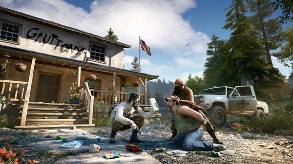
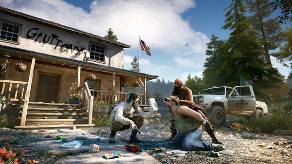

Far Cry 5 chama atenção por apresentar um enredo repleto de polêmicas. Nele, Joseph Seed é um líder religioso que prega a chegada de um apocalipse, onde apenas os que se juntarem a sua seita irão sobreviver. Além do fanatismo religioso, uma substância alucinógena é utilizada para que seus "fieis" se convertam ao Portão do Éden e jurem lealdade ao seu líder.
A partir desse ponto, você entra na pele de um(a) agente do governo que precisa deter Joseph. Só que, chegando ao local, as coisas não vão como o planejado, sendo preciso sobreviver e ajudar os cidadãos de Hope County a se libertarem do mal que assola a região.
Pode parecer clichê, mas a forma com que tudo se desenrola em Far Cry 5 faz com que o jogador se sinta angustiado para cumprir a tarefa. Seja pelas mensagens de Joseph e seus subordinados enviadas a todo momento pelo rádio, ou pelas consequências violentas e sanguinárias das atitudes dos mesmos.
Mas não só os vilões têm espaço na trama. Os aliados também têm papéis fundamentais no desenrolar de toda a história e colaboram para criar um clima onde você se sente obrigado a ajudar cada um diante de tudo que Seed fez (e faz). Pena que o(a) protagonista não traz um diálogo próprio, criando sua personalidade apenas em cima de suas consequências.
Muitos questionam o fato de Far Cry 5 carregar uma mecânica quase inalterada por seus últimos games. Por mais que os jogos de mundo aberto sejam um dos mais atrativos da atual geração, é preciso ter uma diferenciação tanto de seus títulos anteriores como de concorrentes que bebem na mesma fonte.
A aposta da Ubisoft foi manter boa parte do que agradou em Far Cry 3 e 4, com inovações inseridas de uma forma calculada e não tão revolucionárias. Por exemplo, ainda é possível gastar um bom tempo caçando animais pela floresta. Mas, no novo game, o jogador pode também optar por atividades mais complexas de pesca, ou até mesmo usar alguns felinos como companheiros.